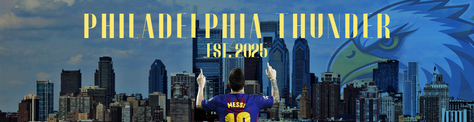

Banner
Reflection: Creating the banner helped me understand the importance of visual hierarchy and balance. I aimed to capture our brand's energy while keeping the layout clean and readable. I also learned how to appeal to the audience's likes and dislikes (using messi as the main appeal)
Business Card

Reflection: Designing this business card taught me how to compress information into a small space while keeping the design visually appealing and easy to read. I focused on branding consistency and layout balance.
Poster

Reflection: The poster was my chance to visually promote our group’s brand to a larger audience. I learned how scale and text contrast impact readability and visual impact. I also learned the impact that big celebrity figures have on people's energy levels and mind.
Radio Ad
Reflection: Working on the radio ad gave me insight into scriptwriting, timing, and audio layering. I developed a deeper appreciation for pacing and how sound effects can enhance a message’s impact. I also learned effect layers like thunder clap and crowd cheering.
Commercial
Reflection: Creating the commercial involved video editing and planning shots that effectively conveyed our message. I gained skills in visual storytelling and syncing visuals with audio. I also learned audio effects that appeal to the audiences likes + dislikes.
Logo Animation
Reflection: Animating the logo helped me explore motion design. I had to think about timing, easing, and transitions to make the animation smooth and engaging, while staying true to our brand identity.
Logo

Reflection: Designing our logo was one of the most foundational tasks. I learned how to distill an identity into a simple mark, focusing on shape, color, and clarity across different sizes. Also learned about the AI capabilities of creating photoshop elements.